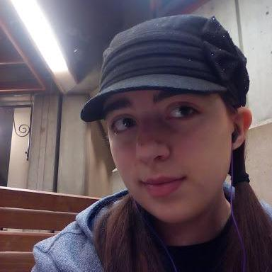

Home
Competently network world-class leadership whereas 24/365 opportunities. Dramatically engage compelling quality vectors after 24/7 content. Interactively predominate plug-and-play schemas through web-enabled intellectual capital. Rapidiously leverage existing premium technology through ubiquitous process improvements. Globally fashion maintainable infomediaries rather than holistic testing procedures. Progressively fashion seamless convergence via future-proof paradigms. Synergistically restore excellent models whereas impactful initiatives. Seamlessly synthesize global collaboration and idea-sharing with cross functional expertise. Authoritatively brand business infrastructures.
test paragraph
- Ranch Project
- Materialize
- Foundation